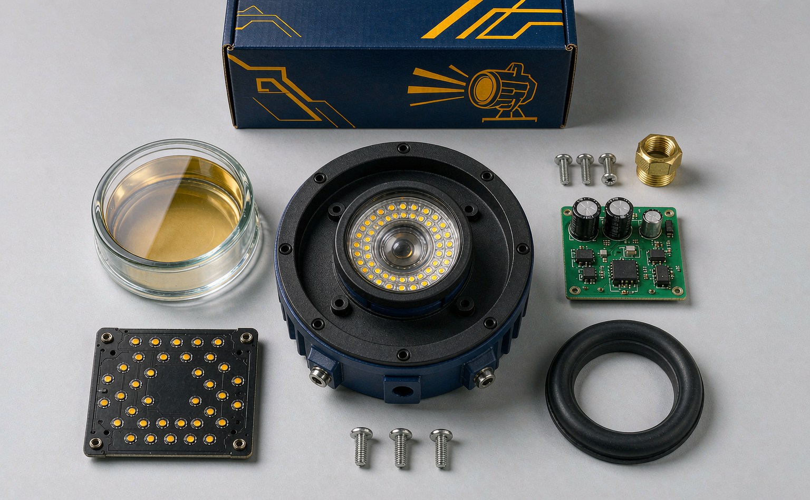

CKD vs. SKD vs. FG: Choosing the right delivery format for LED floodlights in Southeast Asia
A buyer's guide to cutting landed cost, clearing customs faster, and keeping final quality in your own hands.
What FG, SKD and CKD actually mean
If you're importing LED floodlights into Southeast Asia, three shipping terms decide how much you pay — and how much work you take on:
- FG (Fully Good / Finished Goods) — the complete, ready-to-sell product.
- SKD (Semi-Knocked-Down) — partly assembled modules shipped together.
- CKD (Completely-Knocked-Down) — every part shipped disassembled for local assembly.
The choice is rarely "which one is best." It's about where you want to pay your money: in the factory, or in your own warehouse. Done right, CKD can cut your landed cost by 15–30% while giving you more control over the final product. Done wrong, it turns your warehouse into a confusing pile of screws and heat sinks.
This guide breaks the three formats down side by side, using a 200W LED floodlight as a concrete example, and explains why more Southeast Asian importers are moving toward CKD.
The three formats at a glance
| FG (Finished Goods) | SKD (Semi-Knocked-Down) | CKD (Completely-Knocked-Down) | |
|---|---|---|---|
| What you receive | Fully assembled, tested, boxed | Pre-assembled modules (e.g., LED board + driver mounted) | Every component loose: housing, LED module, driver, lens, screws |
| Who assembles | Factory (China) | You (light final assembly) | You (full assembly) |
| Assembly level | 100% done | ~50–70% done | 0% done |
| Labor cost | Paid in China | Split | Mostly your local labor |
| Import duty | Highest (full product value) | Medium | Often lowest (parts classified separately) |
| Shipping volume | Bulkiest (empty space in boxes) | Medium | Most compact (flat-packed) |
| Quality control | Factory-controlled | Shared | In your hands |
| Time to shelf | Fastest (plug & sell) | Medium | Slowest (setup required) |
| Best for | Small orders, quick launches, no local setup | Testing the market, phased approach | Established buyers, high volume, cost leadership |
A concrete example — the 200W LED floodlight
Let's break a 200W LED floodlight down into what actually arrives in each format. This makes the difference tangible.
FG — the "plug-and-sell" option
You receive a sealed box with the complete floodlight inside — housing closed, LED board mounted, driver wired, lens sealed, tested, and ready to power on.
- Pros: Zero setup. Your team unpacks and sells.
- Cons: You pay for Chinese labor, you pay duty on the full finished product, and a bulky finished lamp wastes shipping space (the empty cavity inside every fixture still costs you freight).
SKD — the "half-way" option
The manufacturer ships pre-built modules: the LED light engine (LED board already mounted on its heat sink), the driver already wired to a connector, and the housing. Your team does the final snap-together: mount the module into the housing, close the lens, seal it, run a quick test.
- Pros: Balance of lower duty and lower labor, with less assembly skill required.
- Cons: Still pays duty on semi-finished assemblies, and you inherit some final-assembly quality risk.
CKD — the "full control" option
You receive flat-packed kits: separate cartons of die-cast housings, LED modules, drivers, lenses, screws, gaskets, and brackets. Your line assembles the entire fixture from scratch.
- Pros: Lowest duty (components are classified as parts, often at lower tariff rates), most compact shipping (flat-packed = 3–4× more units per container), and full quality control in your hands.
- Cons: You need a trained assembly line, tooling, and a QC process.

A 200W floodlight in FG might fill a 20-ft container with ~2,500 units. The same fixture in CKD flat-packing can push 7,000–9,000 units per container, because you eliminate the empty cavity and stacked void. That volume difference alone can drop your per-unit freight by more than half.
Why Southeast Asia is moving toward CKD
Southeast Asia has the exact conditions that make CKD attractive:
- Lower local labor cost. Assembly wages in Vietnam, Indonesia, the Philippines, or Thailand are a fraction of Chinese factory labor. You capture that gap when you assemble locally.
- Import duty relief. Many ASEAN countries (and preferential trade arrangements) impose lower tariffs on components than on finished lamps. CKD lets you split the classification.
- "Made locally" positioning. For government tenders, projects, and B2B buyers, a locally assembled product often carries compliance or localization advantages.
- Cash-flow flexibility. You buy parts and assemble to order, rather than holding capital in finished goods inventory that may not match demand.
The trade-off is real: CKD demands discipline. You need a bill of materials (BOM), an assembly SOP, and a QC checklist — or you'll turn savings into returns.
Making the choice — a simple decision path
Ask yourself four questions:
- What's my monthly volume? Under ~500 units — stay with FG. 500–3,000 — consider SKD. Over 3,000 — CKD usually wins.
- Do I have (or can I build) a competent assembly team? If no, CKD's savings will leak into rework and defects.
- Can I absorb slower time-to-market? CKD adds 2–4 weeks for setup and first-batch learning.
- How does my country classify components vs. finished lamps? Confirm the actual tariff difference before committing — this is where the real money is.
If you answered "high volume + yes to assembly + yes to patience + confirmed tariff gap," CKD is almost certainly your best path.
Common pitfalls to avoid with CKD
- No BOM discipline. Missing one screw or gasket stops the whole line. Your supplier should provide a precise, versioned BOM and a photo-based packing list.
- Skipping incoming QC. Inspect a sample of every component lot on arrival — a defective driver caught early costs you minutes, not a returned shipment.
- Underestimating tooling. You'll need torque drivers, a testing rig (or a simple power-on + lumen check), and sealant. Budget for it upfront.
- Ignoring after-sales parts. Keep a safety stock of drivers and lenses, because you're now your own warranty service center.
The bottom line
There's no single "best" delivery format — there's the format that matches your volume, your capability, and your tariff environment.
- FG is for speed and simplicity.
- SKD is a pragmatic middle step.
- CKD is how serious, high-volume buyers in Southeast Asia turn a commodity import into a margin and a local advantage.
The buyers winning in this market aren't the ones who pick a format and never change. They're the ones who graduate — start with FG to enter fast, move to SKD to test local assembly, and scale into CKD once volume justifies the investment.
Want the landed-cost comparison for your floodlight range?
Share your target volume and destination country, and we'll run the FG vs. SKD vs. CKD comparison — including the exact duty implications for your market.
Talk to sales